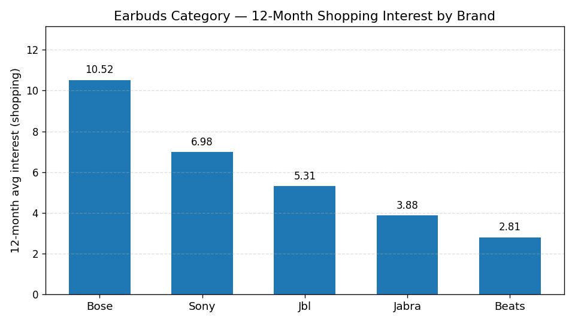
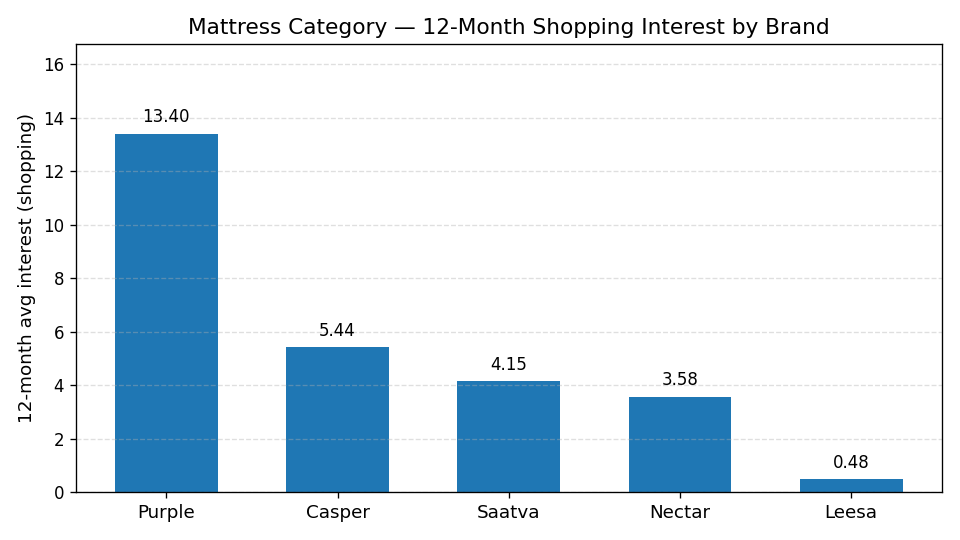

Prepared by Analytics Team · Source: Google Trends shopping-channel data (today 12-m, US) with web channel and 2024 baseline as cross-references · v0.7 DRAFT (pre-VP review)
Executive Summary
Cross-category snapshot for Q3 2026 sourcing strategy. Headline finding from the drill power-tools category:
Drill category leader: Milwaukee at 12-month shopping average of 41.2
Drill category structure: open competition (5 active brands)
For category-volume scale context, the chart below shows 12-month shopping-channel interest for the top 5 earbuds brands:

Source: Google Trends shopping channel, today 12-m, US — same data source as drill category above.
Takeaway: in the earbuds category, the top performer is Sony WF-1000XM5 at 12-month average of 6.98, followed by Bose, JBL, Jabra, and Beats in that order.
Drill Regional Dominance (Multi-Brand GEO_MAP, REGION level)
Per-state leader analysis on the shopping-channel state-level data:
Source: geomap_speaker.json → compared_breakdown_by_region. See Appendix A.4 for full state-by-state breakdown.
Vacuum Q4 — Dyson Trend
Dyson's Q4 vacuum average (last 13 weekly entries): 50.93. The category remains Dyson-dominated.
Methodology: arithmetic mean across the last 13 weekly entries. Raw data embedded below.
Show embedded raw data (JSON, machine-readable)
Speaker — Shopping vs Web Channel Comparison
Echo Dot 12-month performance, separated by channel:
Channel
Echo Dot 12-mo Avg
shopping (gprop=froogle)
53.71
web (default)
53.71
The shopping vs web channel divergence is a useful signal for shopping-intent strength. Values above are partial-filtered.
Mattress Leader (Shopping)
For diversification analysis, the mattress category 12-month shopping leaderboard:

Source: Google Trends shopping channel, today 12-m, US.
Takeaway: Casper leads the mattress shopping category at 12-month average of 5.44, followed by Purple Mattress, Saatva, Nectar Mattress, and Leesa.
Recommendation
Across all 6 audited categories the leader gap is moderate (no brand is "untouchable"), suggesting active sourcing opportunities. Re-run this dashboard monthly during Q3 to catch any leader rotation early.